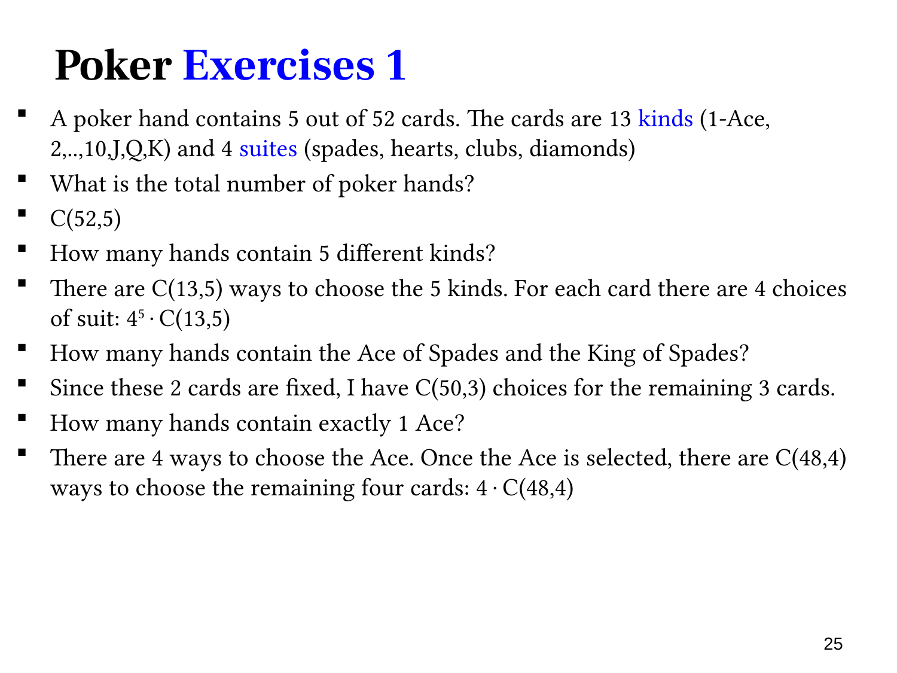

L1.6 · 第 25 页讲解原文
查看这一页课件

扑克牌：点数、花色与指定牌
标准 52 张牌有 13 种点数（kind/rank），每个点数有四种花色（suit）：黑桃、红桃、梅花、方块。每张牌由点数和花色共同确定，五张手牌不计次序。
本页四问分别对应不同限制：
- 所有手牌：从 52 张中选五张，共 C(52,5)。
- 五张点数互不相同：先从 13 种点数中选五种，有 C(13,5)；每个选定点数再选一种花色，各有 4 种，所以共 C(13,5)45。不再乘 5!，因为手牌无序。
- 包含黑桃 A 和黑桃 K：两张指定牌已固定，剩三张从其他 50 张中选，得到 C(50,3)。
- 恰好一个 A：先从四张 A 中选一张，有 4 种；其余四张必须从 48 张非 A 中选，共 4C(48,4)。
最后一问不能用 4C(51,4)，否则剩下的牌可能含其他 A，违反“恰好一个”。第三问则只指定两张具体牌，没有禁止其他 A 或 K，所以可使用其余全部 50 张。
每一步的候选范围由题目限制决定，先确定这一范围，再套组合公式。